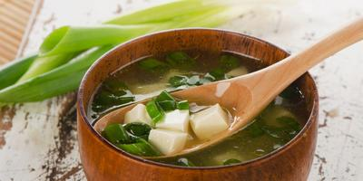

Miso Soup

This miso soup is full of savory flavors. Add more dashi to your soup if you want a stronger stock. You can use yellow, white, or red miso paste for this soup — yellow miso is sweet and creamy, red miso is stronger and saltier.
Prep time: 5 minutes
Cook time: 10 minutes
Total time: 15 minutes
Ingredients
- 4 cups of water
- 2 teaspoons dashi granules
- 3 tablespoons miso paste
- 1 (8ounce) package silken tofu,diced
- 2 green onions, sliced diagonally into 1/2 inch pieces
Directions
- Combine water and dashi granules in a medium saucepan over medium-high heat; bring to a boil.
- Reduce heat to medium and whisk in miso paste.
- Stir in tofu.
- Separate the layers of green onions, and add them to the soup.
- Simmer gently for 2 to 3 minutes before serving.
Tips
Dashi is a basic stock used in Japanese cooking which is made by boiling dried kelp (seaweed) and dried bonito (fish). Instant dashi granules are sold in conveniently-sized jars or packets and vary in strength.
Learn how to cook rice to serve alongside miso soup!